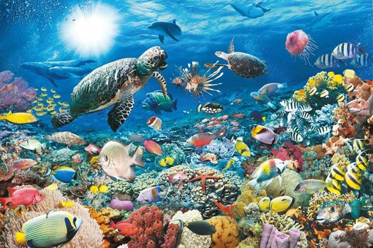
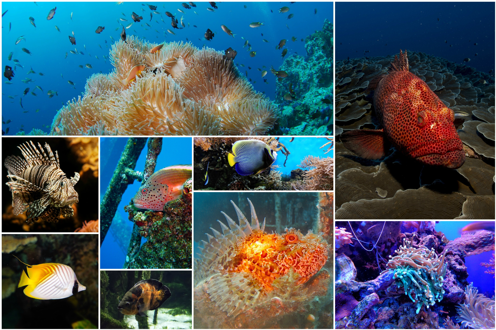

La vida marina, la conforman las plantas, los animales y otros organismos que viven en el agua salada de los mares y océanos, o el agua salobre de los estuarios costeros. En un nivel fundamental, la vida marina ayuda a determinar la naturaleza misma de nuestro planeta. Los organismos marinos producen gran parte del oxígeno que respiramos. Las costas están en parte conformadas y protegidas por la vida marina, y algunos organismos marinos incluso ayudan a crear nuevas tierras.
La mayoría de las formas de vida evolucionaron inicialmente en hábitats marinos. Por volumen, los océanos proporcionan aproximadamente el 90 % de la superficie habitable del planeta.Los primeros vertebrados aparecieron en forma de peces, que viven exclusivamente en agua. Algunos de estos evolucionaron en anfibios que pasan partes de sus vidas en agua y en tierra. Otros peces evolucionaron en mamíferos terrestres y posteriormente regresaron al océano como focas, delfines o ballenas. Las plantas como algas marinas y algas crecen en el agua y son la base de algunos ecosistemas submarinos. El plancton, y particularmente el fitoplancton, son productores primarios claves que forman la base general de la cadena alimentaria oceánica.
Los vertebrados marinos necesitan oxígeno para sobrevivir, y lo obtienen de diversas maneras. Los peces tienen branquias en lugar de pulmones, aunque algunas especies de peces, como el pez pulmonado, tienen ambas. Los mamíferos marinos, tales como delfines, ballenas, nutrias y focas necesitan emerger periódicamente para respirar aire. Algunos anfibios pueden absorber oxígeno a través de su piel. Los invertebrados exhiben una amplia gama de modificaciones para sobrevivir en aguas pobremente oxigenadas, incluyendo tubos de respiración (ver sifones de insectos y moluscos) y branquias (Carcinus). Sin embargo, a medida que la vida de los invertebrados evolucionó en un hábitat acuático, la mayoría tiene poca o ninguna especialización para la respiración en el agua.
En total, hay 230 000 especies marinas documentadas, incluyendo más de 16 000 especies de peces, y se ha estimado que casi dos millones de especies marinas aún no se han documentado.Las especies marinas varían en tamaño desde microscópicas, que incluyen plancton y fitoplancton que pueden ser tan pequeñas con 0,02 micrómetros, hasta grandes cetáceos (ballenas, delfines y marsopas) que en el caso de la ballena azul alcanzan hasta 33 m de longitud, siendo el animal más grande.


Los microorganismos son cruciales para el reciclaje de nutrientes en los ecosistemas, ya que actúan como descomponedores. Algunos microorganismos son patógenos y causan enfermedades e incluso la muerte en plantas y animales.Como habitantes del medio ambiente más grande de la Tierra, los sistemas marinos microbianos impulsan cambios en todos los sistemas globales. Los microbios son responsables de prácticamente toda la fotosíntesis que ocurre en el océano, así como del ciclo del carbono, nitrógeno, fósforo, otros nutrientes y oligoelementos.
Los primeros animales fueron invertebrados marinos, es decir, los vertebrados llegaron más tarde. Los animales son eucariotas multicelulares, y se distinguen de las plantas, las algas y los hongos por la falta de paredes celulares. Los invertebrados marinos son animales que habitan en un ambiente marino aparte de los miembros vertebrados del filo cordado. Los invertebrados carecen de columna vertebral. Algunos han evolucionado una concha o un exoesqueleto duro.
La anatomía de los peces comprende un corazón con dos cámaras, opérculo, vejiga natatoria, escamas, ojos adaptados para ver bajo el agua, y células secretorias que producen moco. Los peces respiran extrayendo oxígeno del agua mediante branquias. Las aletas le permiten propulsarse y controlar su estabilidad en el agua. Los peces se organizan en dos grandes grupos: peces con esqueletos óseos y peces con esqueletos cartilaginosos. Existen más de 33 000 especies de peces,de las cuales unas 20 000 corresponden a peces marinos.